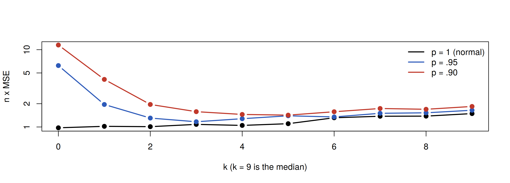
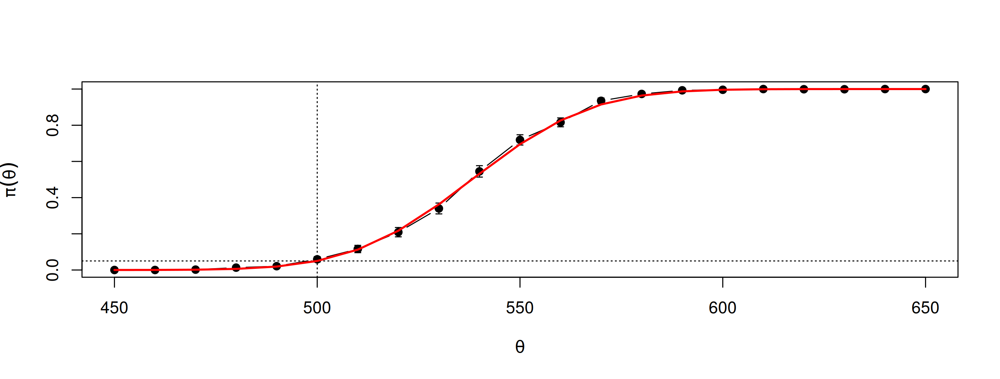
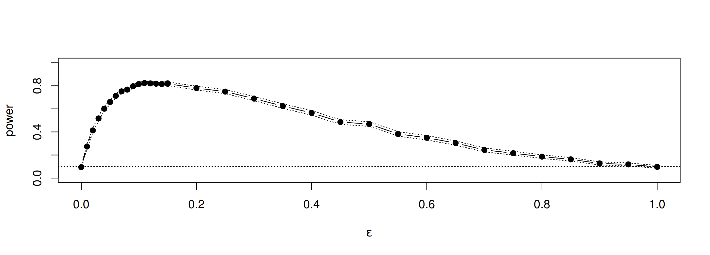
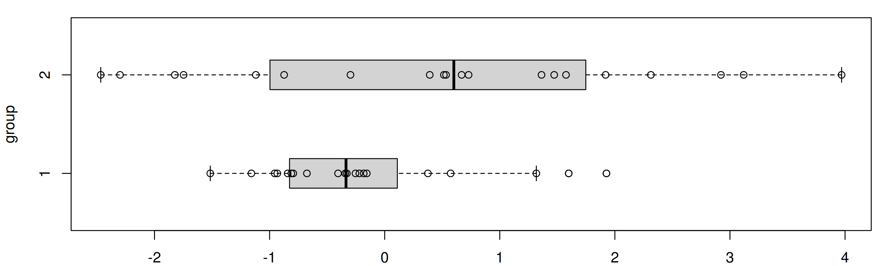

set.seed(4750)
m <- 1000
g <- numeric(m)
for (i in 1:m) {
x <- rnorm(2)
g[i] <- abs(x[1] - x[2])
}
est <- mean(g)
c(estimate = est, exact = 2 / sqrt(pi), se = sqrt(sum((g - mean(g))^2)) / m)estimate exact se
1.13620 1.12838 0.02741 MATH 4750 / MSSC 5750 Computational Statistics
Marquette University
MATH 4750 - Spring 2027
\(X_1, X_2\stackrel{\text{iid}}{\sim}N(0,1)\). Estimate \(\theta = \mathrm{E}|X_1 - X_2|\) (exact value \(2/\sqrt\pi\)).
estimate exact se
1.13620 1.12838 0.02741 The \(k\)th level trimmed mean \(\bar X_{[-k]} = \frac{1}{n-2k}\sum_{i=k+1}^{n-k}X_{(i)}\). Estimate its MSE when sampling from \(N(0,1)\) (\(\theta = 0\)):
Compare MSE for all trimming levels under \(N(0,1)\) and the contaminated normal \(0.9\,N(0,1) + 0.1\,N(0,100)\).
set.seed(522); n <- 20; K <- n / 2 - 1; m <- 1000
mse <- matrix(0, n / 2, 6)
trimmed.mse <- function(n, m, k, p) {
tmean <- numeric(m)
for (i in 1:m) {
sigma <- sample(c(1, 10), size = n, replace = TRUE, prob = c(p, 1 - p))
x <- sort(rnorm(n, 0, sigma))
tmean[i] <- sum(x[(k + 1):(n - k)]) / (n - 2 * k)
}
mse.est <- mean(tmean^2); se.mse <- sqrt(mean((tmean - mean(tmean))^2)) / sqrt(m)
c(mse.est, se.mse)
}
for (k in 0:K) {
mse[k + 1, 1:2] <- trimmed.mse(n = n, m = m, k = k, p = 1.0)
mse[k + 1, 3:4] <- trimmed.mse(n = n, m = m, k = k, p = .95)
mse[k + 1, 5:6] <- trimmed.mse(n = n, m = m, k = k, p = .9)
}
matplot(0:K, n * mse[, c(1, 3, 5)], type = "b", pch = 19, lty = 1, lwd = 2, col = c(1, "#2E5BBA", "#C0392B"),
xlab = "k (k = 9 is the median)", ylab = "n x MSE", log = "y")
legend("topright", c("p = 1 (normal)", "p = .95", "p = .90"), col = c(1, "#2E5BBA", "#C0392B"), lwd = 2, bty = "n")
For a normal sample, \((n-1)S^2/\sigma^2\sim\chi^2(n-1)\), so a one-sided 95% upper confidence limit is \((n-1)S^2/\chi^2_\alpha\).
[1] 0.953[1] 0.799The \(\chi^2\) interval for \(\sigma^2\) is not robust to departures from normality. A \(t\) interval for \(\mu\) is much more robust (try it: Exercise 7.A).
Hypothesis testing is the most used methodology of statistics:
Elements: (1) null hypothesis \(H_0\); (2) alternative (research) hypothesis \(H_a\); (3) test statistic; (4) decision rule (rejection region); (5) conclusion.
25 subjects on a new diet, 25 on placebo for eight weeks; count how many lost weight.
| Placebo | New diet | |
|---|---|---|
| \(n\) | 25 | 25 |
| lost weight | 4 | 6 |
\(X_1\sim\text{Bin}(25,\pi_1)\), \(X_2\sim\text{Bin}(25,\pi_2)\); \(H_0:\pi_1 = \pi_2\) vs. \(H_a:\pi_1 < \pi_2\).
| \(H_0\) true | \(H_a\) true | |
|---|---|---|
| Reject \(H_0\) | Type I error (\(\alpha\)) | correct (power \(1-\beta\)) |
| Do not reject \(H_0\) | correct | Type II error (\(\beta\)) |
\[ z = \frac{\bar y - \mu_0}{\sigma/\sqrt n}\qquad \begin{cases} H_a:\mu>\mu_0: & \text{reject if } z > z_\alpha\\ H_a:\mu<\mu_0: & \text{reject if } z < -z_\alpha\\ H_a:\mu\neq\mu_0: & \text{reject if } |z| > z_{\alpha/2} \end{cases} \]
Assumes \(\sigma\) known and \(n\ge 30\) or a normal population.
Blood pressure: \(n = 100\), \(\bar y = 121.5\), \(\sigma = 5\), \(H_0:\mu = 120\) vs \(H_a:\mu > 120\).
z critical p_value
3.00000 1.64485 0.00135 Anti-bacterial soap: \(n = 35\), \(\bar y = 31.2\), \(s = 8.4\), \(H_0:\mu = 33\) vs \(H_a:\mu<33\).
z critical p_value
-1.2677 -1.6449 0.1024 We failed to reject. Can we conclude that the soap is not effective? Why not?
\(X_1,\dots,X_{20}\sim N(\mu,\sigma^2)\); test \(H_0:\mu = 500\) vs. \(H_1:\mu>500\) at \(\alpha = 0.05\) with \(T^* = (\bar X - 500)/(S/\sqrt{20})\sim t(19)\).
[1] 0.05400 0.00226 normal exponential lognormal
0.0570 0.0168 0.0100 \[ \sqrt{b_1} = \frac{\frac1n\sum(X_i - \bar X)^3}{\left(\frac1n\sum(X_i-\bar X)^2\right)^{3/2}},\qquad \sqrt{b_1}\approx N\!\left(0, \frac6n\right) \text{ under normality.} \]
sk <- function(x) { xbar <- mean(x); m3 <- mean((x - xbar)^3); m2 <- mean((x - xbar)^2); m3 / m2^1.5 }
n <- c(10, 20, 30, 50, 100, 500)
cv <- qnorm(.975, 0, sqrt(6 / n)) # asymptotic critical values
cv.exact <- qnorm(.975, 0, sqrt(6 * (n - 2) / ((n + 1) * (n + 3)))) # using the finite-sample variance
p.reject <- p.reject.exact <- numeric(length(n)); m <- 10000; set.seed(4750)
for (i in 1:length(n)) {
sktests <- replicate(m, sk(rnorm(n[i])))
p.reject[i] <- mean(abs(sktests) >= cv[i])
p.reject.exact[i] <- mean(abs(sktests) >= cv.exact[i])
}
rbind(n, asymptotic = p.reject, finite_sample = p.reject.exact) [,1] [,2] [,3] [,4] [,5] [,6]
n 10.0000 20.0000 30.0000 50.0000 100.0000 500.0000
asymptotic 0.0120 0.0267 0.0349 0.0413 0.0476 0.0463
finite_sample 0.0527 0.0529 0.0532 0.0517 0.0530 0.0477\[ \pi(\theta) = P_\theta(\text{reject } H_0),\qquad \text{power at } \theta_1\in\Theta_1 = 1 - \beta(\theta_1). \]
What increases power? Smaller \(\sigma\); \(\mu_a\) farther from \(\mu_0\); larger \(n\); larger \(\alpha\).
Empirical power at \(\theta_1\): for \(j = 1,\dots,m\), generate a sample under \(\theta = \theta_1\), perform the test, record \(I_j = 1\) if \(H_0\) is rejected. Then \(\hat\pi(\theta_1) = \bar I\), with \(\widehat{\mathrm{se}} = \sqrt{\hat\pi(1-\hat\pi)/m}\).
n <- 20; m <- 1000; mu0 <- 500; sigma <- 100
mu <- c(seq(450, 650, 10)); M <- length(mu)
power <- numeric(M); set.seed(4750)
for (i in 1:M) {
pvalues <- replicate(m, expr = {
x <- rnorm(n, mean = mu[i], sd = sigma)
t.test(x, alternative = "greater", mu = mu0)$p.value })
power[i] <- mean(pvalues <= .05)
}
se <- sqrt(power * (1 - power) / m)
plot(mu, power, type = "b", pch = 19, ylim = c(0, 1), xlab = expression(theta), ylab = expression(pi(theta)))
arrows(mu, power - 2 * se, mu, power + 2 * se, angle = 90, code = 3, length = .03)
abline(v = mu0, lty = 3); abline(h = .05, lty = 3)
lines(mu, 1 - pt(qt(.95, n - 1), n - 1, ncp = (mu - mu0) / (sigma / sqrt(n))), col = "red", lwd = 2)
The red curve is the exact power from the noncentral \(t\) distribution.
To detect \(\Delta = |\mu_a - \mu_0|\) with power \(1-\beta\) at level \(\alpha\) (\(\sigma\) known):
\[ \text{one-sided: } n = \sigma^2\frac{(z_\alpha + z_\beta)^2}{\Delta^2},\qquad \text{two-sided: } n = \sigma^2\frac{(z_{\alpha/2}+z_\beta)^2}{\Delta^2}. \]
Cereal boxes. Labeled 16 oz, filled with mean 16.37 oz, \(\sigma = 0.225\). Test \(H_0:\mu = 16.37\) vs \(H_a:\mu<16.37\) at \(\alpha = .05\). How many boxes to detect \(\mu\le 16.27\) with power 0.99?
n rounded_up
79.84 80.00 [1] 81.21Against the contaminated normal \((1-\varepsilon)N(0,1) + \varepsilon N(0,100)\):
alpha <- .1; n <- 30; m <- 2500
epsilon <- c(seq(0, .15, .01), seq(.15, 1, .05)); N <- length(epsilon)
pwr <- numeric(N); cv <- qnorm(1 - alpha / 2, 0, sqrt(6 * (n - 2) / ((n + 1) * (n + 3))))
set.seed(4750)
for (j in 1:N) {
e <- epsilon[j]
sktests <- replicate(m, { sigma <- sample(c(1, 10), replace = TRUE, size = n, prob = c(1 - e, e))
as.integer(abs(sk(rnorm(n, 0, sigma))) >= cv) })
pwr[j] <- mean(sktests)
}
plot(epsilon, pwr, type = "b", pch = 19, xlab = bquote(epsilon), ylim = c(0, 1), ylab = "power")
abline(h = .1, lty = 3); se <- sqrt(pwr * (1 - pwr) / m)
lines(epsilon, pwr + 2 * se, lty = 3); lines(epsilon, pwr - 2 * se, lty = 3)
Compare the skewness test with Shapiro-Wilk (shapiro.test) and the energy test (energy::mvnorm.etest).
alpha <- .1; n <- 30; m <- 1000; eps <- c(0, .05, .1, .2, .5)
set.seed(4750)
res <- sapply(eps, function(e) {
r <- replicate(m, {
x <- rnorm(n, 0, sample(c(1, 10), replace = TRUE, size = n, prob = c(1 - e, e)))
c(skewness = abs(sk(x)) >= cv, shapiro = shapiro.test(x)$p.value <= alpha)
})
rowMeans(r)
})
colnames(res) <- paste0("eps=", eps); round(res, 3) eps=0 eps=0.05 eps=0.1 eps=0.2 eps=0.5
skewness 0.091 0.644 0.806 0.810 0.435
shapiro 0.093 0.667 0.896 0.986 0.909With energy installed, add energy::mvnorm.etest(x, R = 200)$p.value <= alpha: it is the most powerful of the three for this alternative (and costly, since it uses a bootstrap).
McGrath and Yeh (2005): to compare the spread of two samples, count the number of extreme points of each sample relative to the range of the other. Declare unequal variance if either count exceeds five.
out1 out2 max
0 8 8 
count5test <- function(x, y) {
X <- x - mean(x); Y <- y - mean(y)
outx <- sum(X > max(Y)) + sum(X < min(Y))
outy <- sum(Y > max(X)) + sum(Y < min(X))
return(as.integer(max(c(outx, outy)) > 5)) # return 1 (reject) or 0 (do not reject H0)
}
set.seed(4750); m <- 10000
size_equal_n <- mean(replicate(m, count5test(rnorm(20), rnorm(20))))
size_unequal_n <- mean(replicate(m, count5test(rnorm(20), rnorm(50))))
power_sd1.5 <- mean(replicate(m, count5test(rnorm(20, 0, 1), rnorm(20, 0, 1.5))))
c(size_equal_n = size_equal_n, size_unequal_n = size_unequal_n, power_sd1.5 = power_sd1.5) size_equal_n size_unequal_n power_sd1.5
0.0541 0.2919 0.3249 With unequal sample sizes the Count Five test does not control the Type I error rate at 0.0625. Monte Carlo reveals this immediately; a fix is a permutation version (Ch 10).
Estimate the power of the \(t\) test and the Wilcoxon signed-rank test (wilcox.test) for \(n = 20\) when the data are \(t(3)\)-distributed with location \(\theta\in[0, 1.5]\). Which test would you recommend?